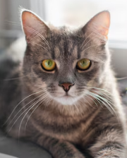
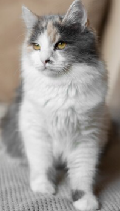
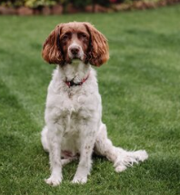
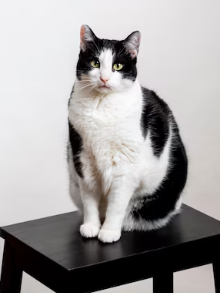

Información
Reducción de la sobrepoblación animal

Adoptar animales ayuda a disminuir el problema de la sobrepoblación en refugios y calles. Miles de perros y gatos son abandonados cada año, y muchos de ellos no encuentran hogar, lo que conduce a su sacrificio en algunos refugios debido a la falta de espacio. Adoptar un animal contribuye directamente a salvar una vida y a liberar espacio en los refugios para otros animales que también necesitan ayuda.
Adoptar es más económico y responsable
Adoptar un animal suele ser mucho más económico que comprar uno en tiendas o criaderos. Los refugios, además, entregan animales que ya han sido vacunados, esterilizados y que han pasado por revisiones veterinarias. Este ahorro inicial no solo es beneficioso para el adoptante, sino que también garantiza que el animal llegue a su nuevo hogar en buenas condiciones de salud.
Beneficios emocionales y físicos
Adoptar un animal no solo beneficia a la mascota, sino también a la persona que lo hace. Estudios han demostrado que tener un animal de compañía reduce el estrés, la ansiedad y mejora la salud emocional y física. Estos animales, agradecidos por la segunda oportunidad, suelen crear lazos muy fuertes con sus nuevos dueños, lo que resulta en una relación especial y beneficiosa para ambas partes.
Una segunda oportunidad para los animales
Los animales en los refugios, a menudo, han sufrido el abandono, maltrato o han nacido en la calle sin atención ni cuidados. Al adoptar, se brinda una nueva oportunidad de vida a estos seres que, de otro modo, podrían no sobrevivir. Además, muchos de ellos son animales sanos, cariñosos y con la capacidad de ser excelentes compañeros.
Reducción de la sobrepoblación animal
Adoptar animales ayuda a disminuir el problema de la sobrepoblación en refugios y calles. Miles de perros y gatos son abandonados cada año, y muchos de ellos no encuentran hogar, lo que conduce a su sacrificio en algunos refugios debido a la falta de espacio. Adoptar un animal contribuye directamente a salvar una vida y a liberar espacio en los refugios para otros animales que también necesitan ayuda.
El fomento de la ética y la responsabilidad social
Adoptar en lugar de comprar refleja una actitud ética hacia los animales. Evita apoyar la explotación comercial que a menudo ocurre en criaderos que priorizan las ganancias sobre el bienestar de los animales. En muchos casos, estos criaderos operan en condiciones deplorables, con animales maltratados o utilizados únicamente para reproducirse sin el cuidado adecuado.